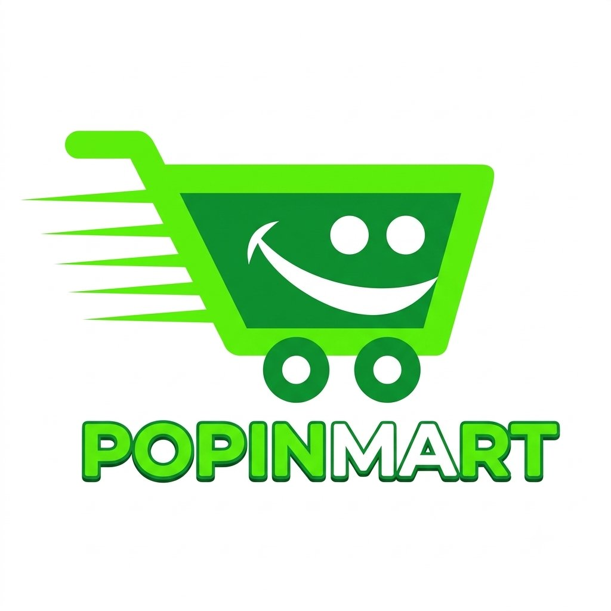

POPPIN MART
Fresh • Clean • Sunny E-Commerce
Tên tiếng Anh: Building POPPIN MART – An Online Fresh Grocery & Personal Care E-Commerce Platform with Cloud PostgreSQL and Secure QR-OTP Checkout.
Link Website thực tế (Live): https://qhuy-ecweb.onrender.com | GitHub: https://github.com/26522120-ux/Qhuy_ECWEB
| Nhóm khách hàng | Đặc điểm nhân khẩu học | Hành vi & Nhu cầu | Đáp ứng từ POPPIN MART |
|---|---|---|---|
| 1. Sinh viên & Giới trẻ (Gen Z, Millennials) | 18 – 30 tuổi, mua sắm chủ yếu trên điện thoại màn hình lớn (6.1 – 6.9 inches). | Thích giao diện hiện đại, săn Flash Deals, chuộng sản phẩm chăm sóc cá nhân mới. | Thanh điều hướng đáy Mobile App Bar, Pop-up ưu đãi sản phẩm mới, thanh toán QR-OTP. |
| 2. Gia đình trẻ & Nội trợ hiện đại | 25 – 45 tuổi, thu nhập ổn định, ưu tiên thực phẩm sạch và rõ nguồn gốc. | Mua sắm định kỳ theo nhóm hàng (Rau củ, Thịt cá, Sữa trứng), cần ưu đãi phí giao hàng. | 10 nhóm gian hàng trực quan, miễn phí giao hàng cho đơn từ 300.000 ₫. |
| 3. Dân văn phòng bận rộn | 24 – 40 tuổi, ít thời gian đi chợ hoặc siêu thị giờ cao điểm. | Cần tìm kiếm nhanh, lọc theo mức giá và theo dõi đơn hàng minh bạch. | Tìm kiếm & lọc giá tức thì, lưu lịch sử đơn hàng đồng bộ trên CSDL Neon. |
Ưu/Nhược điểm: Danh mục hàng phong phú, sắc xanh – vàng nhận diện mạnh; tuy nhiên mật độ thông tin dày đặc dễ gây rối mắt trên màn hình di động.
Học hỏi cho POPPIN MART: Kế thừa tông màu Trắng – Xanh lá – Vàng nắng tươi mới nhưng thiết kế theo phong cách tối giản, thoáng đãng (Clean & Modern UI).
Ưu/Nhược điểm: Phân nhóm gian hàng chuẩn mực, quản lý hội viên theo SĐT; nhưng thao tác chuyển trang trên di động còn nhiều bước.
Học hỏi cho POPPIN MART: Xây dựng luồng định danh 1 Khách hàng = 1 Email + 1 SĐT duy nhất và tích hợp Bottom App Bar giúp thao tác một tay trên màn hình 6.9 inches.
Ưu/Nhược điểm: Định vị tốt dòng sản phẩm hữu cơ và chăm sóc tự nhiên; nhưng ít hiệu ứng trình chiếu sản phẩm mới và xác thực OTP trực tiếp.
Học hỏi cho POPPIN MART: Bổ sung Pop-up giới thiệu sản phẩm mới, Slider sản phẩm tự động trên Banner và quy trình Thanh toán QR kèm mã OTP 6 chữ số.
User trên Neon DB.
@unique trong CSDL; tự động phát hiện trùng lặp và chuyển hướng về trang
Đăng nhập (/login).